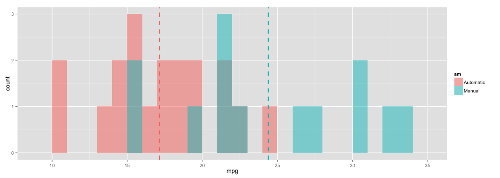
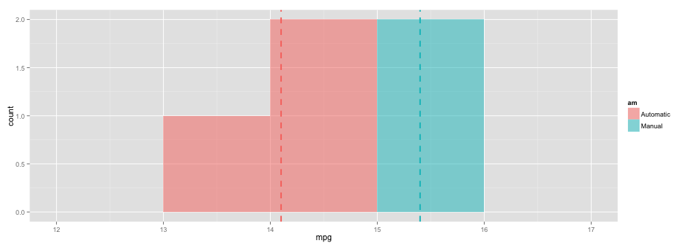

Geoff Freedman
Data Science Dude

library(ggplot2)
data(mtcars)
mtcars$am <- as.factor(mtcars$am)
levels(mtcars$am) <- c("Automatic", "Manual")
sumMtcars <- aggregate(mpg~am, data = mtcars, function(x) mean(x))
ggplot(mtcars, aes(x=mpg, fill=am)) + geom_histogram(binwidth=1, alpha=.5, position="identity") + geom_vline(data=sumMtcars, aes(xintercept=mpg, colour=am), linetype="dashed", size=1)
